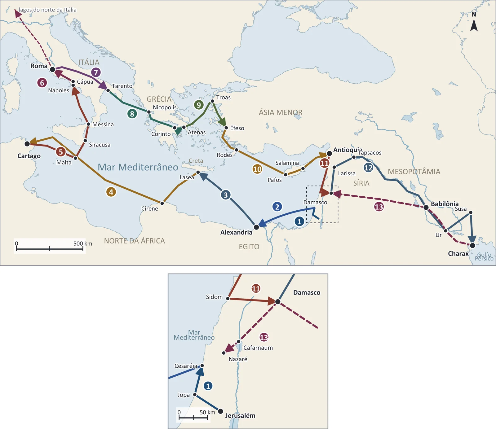
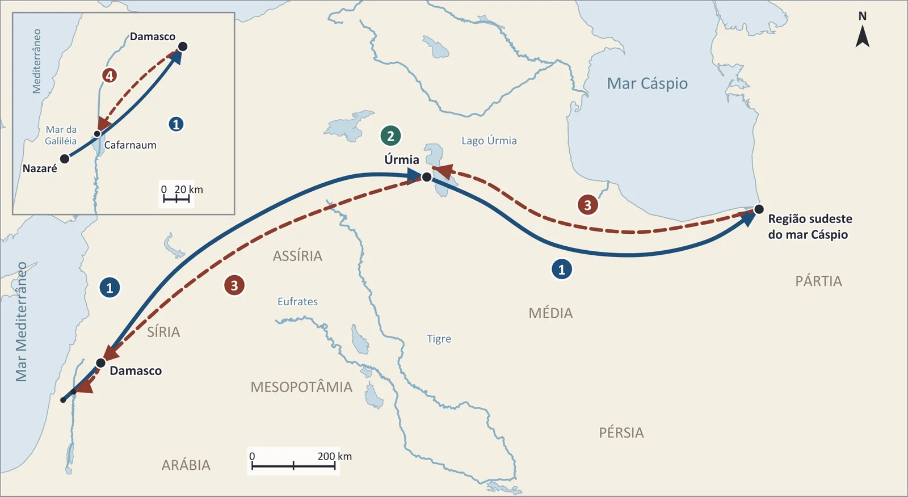
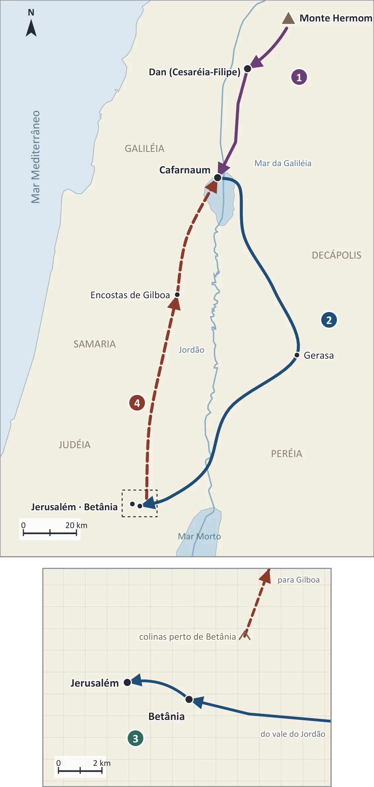

Parte II Primeiras viagens e ensinamentos
Documentos 130–134
Documento 130A Caminho de Romaabril de 22 d.C.
| Acontecimento | O Livro de Urântia | Bíblia |
|---|---|---|
| Mapa 13A viagem a Roma, à Grécia e à Mesopotâmiaabril de 22 d.C. – dezembro de 23 d.C. | ||
| O início da viagem de dois anos a RomaMapa 13-① De Jerusalém a Cesaréia, passando por JopaMapa 13-⑧ Por Nicópolis e Corinto até AtenasMapa 13-⑨ Por Troas até ÉfesoMapa 13-⑫ De caravana até a Mesopotâmia | 130:0.1–7 | Nenhum |
| Em 26 de abril do ano 22 d.C., Jesus partiu de Jerusalém com Gonod e o seu filho Ganid, da Índia, viajando por Jopa, Cesaréia, Alexandria, Cartago, Roma, Corinto, Éfeso e muitos outros lugares, até se separar deles em Charax, em 10 de dezembro do ano 23 d.C. Jesus ensinava Ganid e servia de intérprete a Gonod. | ||
| 1. Em Jopa — O Discurso sobre Jonas | 130:1.1–6 | Nenhum |
| Em Jopa Jesus conheceu Gádia, um intérprete filisteu que trabalhava para Simão, curtidor de couro. Quando Gádia lhe perguntou sobre Jonas e o grande peixe, Jesus respondeu advertindo contra a fuga ao dever. Sobre o bem e o mal, ensinou que Deus não cria o mal; o mal resulta da escolha imatura. | ||
| 2. Em Cesaréia | 130:2.1–10 | Nenhum |
| Enquanto se substituía um remo de leme quebrado, Jesus ficou em Cesaréia, conversando com um mercador da Mongólia e incentivando um jovem grego, Anaxand, a vencer com a bondade o seu capataz injusto. Explicou a Ganid a diferença entre a vontade de Deus e a vontade do homem, e que um cão não tem natureza espiritual. | ||
| 3. Em AlexandriaMapa 13-② A Alexandria | 130:3.1–10 | Nenhum |
| Em Alexandria, Jesus e Ganid viram o farol de Faros e passavam diariamente algum tempo na maior biblioteca e no maior museu do mundo. Sob a orientação de Jesus, Ganid começou a reunir os ensinamentos das religiões do mundo que reconheciam uma Deidade Universal. Não encontraram Filo, que estava doente. | ||
| 4. O Discurso sobre a RealidadeMapa 13-③ A Lasea, em Creta | 130:4.1–15 | Nenhum |
| Na noite anterior à partida de Alexandria, depois de encontrar um professor que dava conferências sobre Platão, Jesus explicou a Ganid a natureza da realidade do universo. A fonte da realidade é o Infinito; a personalidade conserva a sua identidade em meio às mudanças; e o mal é a sombra da imperfeição projetada por um universo finito. | ||
| 5. Na Ilha de Creta | 130:5.1–4 | Nenhum |
| Em Creta os viajantes descansaram e subiram as montanhas, e Jesus teve a sua primeira longa conversa sobre religião com Gonod. Quando Ganid perguntou por que ele não ensinava publicamente, Jesus disse que tudo deve esperar o seu tempo. Em Portos-Belos ele salvou uma jovem escrava que estava sendo espancada por um homem bêbado. | ||
| 6. O Jovem que Tinha MedoMapa 13-④ Por Cirene até Cartago | 130:6.1–6 | Nenhum |
| Nas montanhas de Creta, Jesus aproximou-se de um jovem medroso e abatido chamado Fortunato, perguntando-lhe o caminho para Fênix, e depois o exortou a renascer como um homem de fé, de coragem e de serviço. Em Cirene, Jesus e Ganid prestaram os primeiros socorros a Rufus, filho de Simão, ferido num acidente com um carro de bois. | ||
| 7. Em Cartago — O Discurso sobre o Tempo e o Espaço | 130:7.1–8 | Nenhum |
| A caminho de Cartago, Jesus falou sobretudo de assuntos sociais e políticos, e quando Ganid perguntou como fazer amigos, ele disse que é preciso ter um interesse genuíno pelos semelhantes. Em Cartago teve uma longa conversa com um sacerdote mitraico sobre a imortalidade, o tempo e o espaço. | ||
| 8. A Caminho de Nápoles e RomaMapa 13-⑤ Por Malta, Siracusa e Messina até NápolesMapa 13-⑥ Por Cápua e pela Via Ápia até Roma | 130:8.1–6 | Nenhum |
| Em Malta, Jesus ajudou Cláudio, um jovem que havia pensado em tirar a própria vida, e em Siracusa ajudou Ezra, um judeu desviado, a encontrar Deus. Em Messina encorajou um menino vendedor de frutas, e depois, passando por Nápoles e Cápua, o grupo viajou pela Via Ápia até Roma. | ||
Mapa 13A viagem a Roma, à Grécia e à Mesopotâmia
abril de 22 d.C. – dezembro de 23 d.C. · Documentos 130–134

- ①De Jerusalém a Cesaréia, passando por JopaDomingo de manhã, 26 de abril do ano 22 d.C., com Gonod e o seu filho Ganid, da Índia. Em Jopa conheceu Gádia, um intérprete filisteu; em Cesaréia ajudou a fazer um novo remo de leme para o navio. [130:0.1–2; 130:1.1; 130:2.1]
- ②A AlexandriaQuando o barco ficou pronto, partiram certo dia ao meio-dia para Alexandria, no Egito. [130:3.1]
- ③A Lasea, em CretaPercorreram a ilha a pé e subiram as montanhas. [130:4.12; 130:5.1]
- ④Por Cirene até CartagoDois dias em Cirene, onde prestaram os primeiros socorros a um rapaz ferido chamado Rufus. [130:6.6; 130:7.1]
- ⑤Por Malta, Siracusa e Messina até NápolesEm Malta, uma longa conversa com um jovem chamado Cláudio; uma semana inteira em Siracusa; um dia em Messina. [130:8.1–4]
- ⑥Por Cápua e pela Via Ápia até RomaTrês dias em Cápua. No terceiro dia depois de chegarem a Roma, apresentaram-se perante Tibério. Fizeram cinco viagens a partir de Roma, uma delas aos lagos do norte da Itália (tracejado fino). [130:8.6; 132:0.1; 132:7.1]
- ⑦A pé pela Via Ápia até TarentoA sua bagagem foi à frente em animais de carga até Tarento, enquanto os três atravessavam a Itália a pé, sem pressa. [133:0.2; 133:1.1]
- ⑧Por Nicópolis e Corinto até AtenasVários dias em Nicópolis; em Corinto conheceram Crespo, o principal dirigente da sinagoga. [130:0.3; 133:2.4–5; 133:3.1; 133:5.1]
- ⑨Por Troas até ÉfesoDe Atenas, passando por Troas, até Éfeso, capital da província romana da Ásia. [130:0.3; 133:6.1]
- ⑩Por Rodes e Chipre até AntioquiaParando em Rodes, navegaram para Chipre, desembarcaram em Pafos e descansaram nas montanhas próximas; depois embarcaram em Salamina para Antioquia, na Síria. [133:7.1–2; 133:7.13; 133:8.1]
- ⑪Por Sidom até DamascoDepois de preparar a bagagem para a caravana de camelos, desceram até Sidom e dali foram a Damasco. [133:8.4]
- ⑫De caravana até a MesopotâmiaPor Tapsaco e Larissa até a Babilônia; visitaram Ur e outros lugares e foram por Susa até Charax. Em 10 de dezembro do ano 23 d.C., em Charax, no golfo Pérsico, ele se despediu de Gonod e Ganid. [130:0.1; 130:0.3; 133:9.1–4]
- ⑬O regressoPassando por Ur, voltou à Babilônia e juntou-se a uma caravana do deserto que ia para Damasco. De Damasco foi para Nazaré, parando apenas algumas horas em Cafarnaum para visitar a família de Zebedeu (tracejado). [134:1.1]
Documento 131As Religiões do Mundo22 d.C.
| Acontecimento | O Livro de Urântia | Bíblia |
|---|---|---|
| (Introdução) | 131:0.1–2 | Nenhum |
| Em Alexandria, Ganid empregou mais de sessenta tradutores para reunir o que as religiões do mundo ensinavam sobre a relação de Deus com o homem. A maior parte desses ensinamentos monoteístas provinha dos missionários de Melquisedeque, e ele os organizou sob dez títulos. | ||
| 1. O Cinismo | 131:1.1–9 | Nenhum |
| Ganid escolheu passagens dos escritos dos cínicos, que melhor preservaram os ensinamentos de Melquisedeque. Elas declaram que Deus é supremo, o Altíssimo do céu e da Terra, misericordioso e presente em toda parte, e que o homem que conhece Deus considera todos os homens como seus irmãos e vence o mal com o bem. | ||
| 2. O Judaísmo | 131:2.1–13 | Nenhum |
| Dos registros preservados pelos quenitas e modificados pelos judeus, Jesus e Ganid selecionaram passagens que declaram Deus como o único Senhor, que criou o céu e a Terra, um pastor misericordioso e justo. Foram incluídos o mandamento de amar o próximo como a si mesmo e os Dez Mandamentos. | ||
| 3. O Budismo | 131:3.1–7 | Nenhum |
| Ganid ficou chocado ao descobrir quão perto o budismo chegara de ser uma grande religião sem um Deus pessoal. As passagens que ele escolheu ensinam que a fé traz paz e virtude, que o mal é fruto do pensamento errado, que as ações trazem recompensa certa e que se deve conquistar a si mesmo e vencer o mal com o bem. | ||
| 4. O Hinduísmo | 131:4.1–8 | Nenhum |
| A doutrina monoteísta dos missionários de Melquisedeque incorporou-se aos ensinamentos posteriores do hinduísmo. Jesus e Ganid extraíram passagens que declaram Deus como o único criador e controlador do universo dos universos, que habita na alma humana, e que conhecê-lo rompe os laços da morte. | ||
| 5. O Zoroastrismo | 131:5.1–5 | Nenhum |
| Zoroastro esteve em contato com descendentes dos missionários de Melquisedeque, e, depois do judaísmo, a sua religião foi a que mais preservou os ensinamentos de Salém. Ganid escolheu passagens que ensinam que todas as coisas vêm do Deus Único da luz, todo sábio e bom, que o arrependimento e o perdão removem o pecado e que os justos alcançam a imortalidade. | ||
| 6. O Suduanismo (Jainismo) | 131:6.1–2 | Nenhum |
| O terceiro grupo da Índia que preservava o ensinamento de Melquisedeque sobre um só Deus era conhecido naqueles dias como os suduanistas, os jainistas. Eles ensinavam que o Senhor do Céu é supremo e que a maior vitória do homem é a conquista de si mesmo, que se manifesta na ira, no orgulho, no engano e na cobiça. | ||
| 7. O Xintoísmo | 131:7.1–3 | Nenhum |
| Os registros do xintoísmo, uma religião do Extremo Oriente, haviam chegado havia pouco à biblioteca de Alexandria e também mostravam vestígios do ensinamento de Melquisedeque. Dizem que o Senhor, criador do céu e da Terra, valoriza até a oração do mais pobre e que o orgulho obscurece Deus; por isso é preciso chegar a ele com um coração puro. | ||
| 8. O Taoísmo | 131:8.1–6 | Nenhum |
| Do ensinamento dos mensageiros de Melquisedeque sobre um só Deus na China, a maior parte sobreviveu no taoísmo. As passagens de Ganid dizem que o Supremo Único é o venerado antepassado de todas as coisas, que nutre as criaturas sem coerção; que a verdadeira bondade é como a água; e que o bem deve ser feito sem pensar em recompensa. | ||
| 9. O Confucionismo | 131:9.1–4 | Nenhum |
| Até o confucionismo, a grande religião que menos reconhece Deus, trazia vestígios de monoteísmo. O resumo de Ganid diz que o que o Céu determina é sem erro, que a benevolência é o maior dom do Céu, que as faltas devem ser prontamente confessadas e corrigidas e que não se deve fazer aos outros o que não se deseja para si mesmo. | ||
| 10. “A Nossa Religião” | 131:10.1–8 | Nenhum |
| Ganid registrou a fé a que havia chegado por meio do ensinamento de Jesus, chamando-a de nossa religião. Ela confessa um só Deus, o Pai no céu, cujo espírito habita no homem; uma vez que todos os homens são irmãos, ele se propõe a fazer aos outros o que gostaria que lhe fizessem e a amar até os seus inimigos. | ||
Documento 132A Permanência em Roma22 d.C. – 23 d.C.
| Acontecimento | O Livro de Urântia | Bíblia |
|---|---|---|
| (Introdução) | 132:0.1–10 | Nenhum |
| No seu terceiro dia em Roma, Jesus e os dois indianos apresentaram-se perante o imperador Tibério. Durante quase seis meses Jesus ensinou pessoalmente trinta e dois líderes dos estóicos, dos cínicos e dos cultos de mistério, nunca atacando os seus erros, mas selecionando e iluminando a verdade dos seus ensinamentos; trinta deles ajudaram mais tarde a lançar o alicerce do cristianismo em Roma. | ||
| 1. Os Verdadeiros Valores | 132:1.1–4 | Nenhum |
| Jesus conversou a noite inteira com Angamon, líder dos estóicos em Roma. Ensinou que o padrão dos verdadeiros valores deve ser buscado no mundo espiritual, que o progresso materialista sem discernimento moral põe em perigo a civilização e que os cientistas e os religiosos deveriam servir ao progresso humano, em vez de combater uns aos outros. | ||
| 2. O Bem e o Mal | 132:2.1–10 | Nenhum |
| Respondendo a Mardus, líder dos cínicos de Roma, Jesus disse que o bem e o mal representam níveis relativos da compreensão humana do universo. A bondade é sempre uma experiência pessoal e crescente, e, embora a possibilidade do mal seja necessária à escolha moral, o mal efetivo não o é. | ||
| 3. A Verdade e a Fé | 132:3.1–11 | Nenhum |
| Nabon, sumo sacerdote do culto mitraico, procurou converter Jesus, mas, ao contrário, ficou profundamente impressionado com o seu ensinamento sobre a verdade e a fé. Jesus disse que a verdade só pode ser definida vivendo-a; o conhecimento trata de fatos, a sabedoria de relações e a verdade de valores de realidade, e a verdade não pode ser possuída sem a fé. | ||
| 4. A Ministração Pessoal | 132:4.1–8 | Nenhum |
| Em Roma, Jesus ministrou pessoalmente a mais de quinhentas pessoas de todas as classes, falando-lhes do amor do Pai celeste. Conversou com um senador, com o dono de escravos Cláudio, com um médico grego e com um orador, e defendeu perante um magistrado um pobre homem falsamente acusado, obtendo a sua libertação. | ||
| 5. Aconselhando o Homem Rico | 132:5.1–25 | Nenhum |
| Quando um romano rico, apresentado por Angamon, perguntou o que fazer com a sua riqueza, Jesus dividiu as riquezas em dez fontes, entre elas a riqueza herdada, a descoberta, a do comércio, a dos juros e a ganha com o trabalho, e aconselhou-o a administrar cada uma com justiça e eqüidade, restituindo tudo o que tivesse sido ganho injustamente. O rico prometeu seguir esse conselho. | ||
| 6. A Ministração Social | 132:6.1–3 | Nenhum |
| Em Roma, Jesus e Ganid passaram horas devolvendo uma criança perdida à mãe e ajudaram uma viúva com cinco filhos, cujo marido morrera num acidente, encontrando trabalho para o filho mais velho. Quando Gonod insistiu em que ele escrevesse um livro, Jesus respondeu que a sua missão era viver uma vida. | ||
| 7. Viagens para fora de Roma | 132:7.1–9 | Nenhum |
| Em passeios pelos arredores de Roma, Jesus explicou a Ganid que Deus não pode ser revelado a um homem que não tem fome da verdade. Nas montanhas da Suíça, disse a Gonod que Buda foi um profeta órfão que perdeu Deus de vista, e quando Ganid propôs fazer uma nova religião, Jesus respondeu que a religião não é feita. | ||
Documento 133O Retorno de Roma23 d.C.
| Acontecimento | O Livro de Urântia | Bíblia |
|---|---|---|
| (Introdução)Mapa 13-⑦ A pé pela Via Ápia até Tarento | 133:0.1–3 | Nenhum |
| Jesus deixou Roma sem se despedir, e os que o haviam conhecido formaram mais tarde pequenos grupos. Os três viajantes percorreram a pé a Via Ápia até Tarento. No caminho, Ganid perguntou sobre o sistema de castas da Índia, e Jesus respondeu que perante Deus todos os mortais estão em pé de igualdade. | ||
| 1. A Misericórdia e a Justiça | 133:1.1–5 | Nenhum |
| Perto de Tarento, Jesus salvou um menino pequeno que estava sendo espancado por um maior e segurou o agressor, mas conteve Ganid quando o jovem começou a surrar o culpado. Explicou que a misericórdia é obra do indivíduo, ao passo que a punição da justiça cabe à sociedade e ao governo, e discutiram também a legítima defesa. | ||
| 2. Embarcando para Tarento | 133:2.1–5 | Nenhum |
| No cais de Tarento, Jesus chamou à parte um homem que maltratava a esposa e aconselhou-o com bondade, e o homem arrependeu-se. Jesus disse-lhe que amar e estimar a esposa como uma parceira igual é ser como Deus. O grupo navegou por Nicópolis até Corinto. | ||
| 3. Em Corinto | 133:3.1–12 | Nenhum |
| Em Corinto, Jesus teve mais de vinte encontros com Crespo, o principal dirigente da sinagoga. Certa noite, quando Ganid expulsou rudemente duas cortesãs, Jesus disse-lhe que não as julgasse e levou as mulheres à casa de Justo para ajudá-las a começar uma vida nova. Muitos dos que ali conheceu juntaram-se mais tarde à igreja de Paulo. | ||
| 4. O Trabalho Pessoal em Corinto | 133:4.1–14 | Nenhum |
| Em Corinto, Jesus deu conselhos adequados a muitos: um moleiro, um centurião romano, um líder mitraico, um mestre epicurista, um construtor, um juiz, a dona de uma hospedaria, um mercador chinês, um viajante da Bretanha, um rapaz fugido e um criminoso condenado, a cada um segundo a sua situação. | ||
| 5. Em Atenas — O Discurso sobre a Ciência | 133:5.1–12 | Nenhum |
| Na sua hospedaria em Atenas, Jesus discutiu a ciência com um filósofo grego. Disse que a ciência trata das energias físicas e a religião dos valores eternos, que a lógica e a matemática não podem ser aplicadas sem mudança aos problemas da vida e que os fatos e os valores são, em última instância, unificados no Supremo. | ||
| 6. Em Éfeso — O Discurso sobre a Alma | 133:6.1–7 | Nenhum |
| Em Éfeso os viajantes visitaram o templo de Ártemis, e depois que Ganid comprou um pequeno santuário de prata, conversaram longamente sobre a adoração de coisas feitas por mãos humanas. Quando um filósofo perguntou o que é a alma, Jesus respondeu que é a parte do homem que discerne a verdade e percebe o espírito, nascida juntamente com a atividade moral. | ||
| 7. A Permanência em Chipre — O Discurso sobre a MenteMapa 13-⑩ Por Rodes e Chipre até Antioquia | 133:7.1–13 | Nenhum |
| Enquanto descansavam nas montanhas de Chipre, Ganid foi subitamente acometido de febre, e Jesus cuidou dele com dedicação. Durante a convalescença, Ganid perguntou sobre a autoconsciência superior do homem, e Jesus explicou que a autoconsciência é uma realidade e que a mente não suporta uma dupla lealdade, mas é unificada pela plena dedicação à vontade do Pai. | ||
| 8. Em AntióquiaMapa 13-⑪ Por Sidom até Damasco | 133:8.1–4 | Nenhum |
| Em Antioquia, Jesus não foi com eles aos bosques de Dafne, e à medida que se aproximava o fim da viagem tornava-se pensativo, dizendo apenas que talvez voltasse ali algum dia. Ganid pôs em prática o ensinamento de Jesus visitando um compatriota descontente empregado pelo seu pai e falando-lhe do Pai no céu. | ||
| 9. Na Mesopotâmia | 133:9.1–6 | Nenhum |
| De Damasco os viajantes atravessaram o deserto de caravana e visitaram Ur e Susa; em Ur, Ganid aprendeu a diferença entre o conhecimento, a sabedoria e a verdade. Jesus despediu-se de Gonod e Ganid em Charax, e eles nunca souberam que o seu mestre Joshua era o mais tarde Jesus de Nazaré. | ||
Documento 134Os Anos de Transição24 d.C. – outubro de 25 d.C.
| Acontecimento | O Livro de Urântia | Bíblia |
|---|---|---|
| (Introdução) | 134:0.1–2 | Nenhum |
| Depois da viagem pelo Mediterrâneo, Jesus deu a aprovação final ao plano de nascer na Palestina, de pais judeus. Decidiu voltar à Galiléia e aguardar o começo da sua obra como mestre público, e terminar a sua vida entre os judeus da Palestina, onde ela havia começado. | ||
| Mapa 14O lago da Úrmia e a viagem de caravana ao mar Cáspioabril de 24 d.C. – abril de 25 d.C. | ||
| 1. O Trigésimo Ano (24 d.C.)Mapa 13-⑬ O regressoMapa 14-① A viagem de caravana ao mar Cáspio | 134:1.1–7 | Nenhum |
| Voltando de Charax em dezembro do ano 23 d.C., Jesus passou para Tiago a pequena casa em Cafarnaum que João Zebedeu havia comprado e depois passou várias semanas em Nazaré. Simão e Judá casaram-se num duplo casamento no início de março do ano 24 d.C., e depois que Jesus partiu como condutor de caravana, Maria e Rute mudaram-se para a casa de Cafarnaum. | ||
| Mapa 15A Síria e o litoral do Mediterrâneoabril – verão de 25 d.C. | ||
| 2. A Viagem da Caravana ao Mar CáspioMapa 14-③ O regressoMapa 14-④ A CafarnaumMapa 15-① De Cafarnaum a Nazaré | 134:2.1–5 | Nenhum |
| Em 1º de abril do ano 24 d.C., Jesus tomou o lugar de um condutor de caravana que havia adoecido e conduziu a caravana por Damasco e pelo lago da Úrmia até a região sudeste do mar Cáspio. Entrou em contato com todas as raças sobreviventes, exceto a vermelha, e voltou a Cafarnaum em 1º de abril do ano 25 d.C., indo morar com a família de Zebedeu. | ||
| 3. Os Ensinamentos na ÚrmiaMapa 14-② Úrmia | 134:3.1–8 | Nenhum |
| A caminho do Cáspio, Jesus participou de discussões no templo de filosofia religiosa construído por Cimboitom em Úrmia. Na viagem de volta permaneceu duas semanas e deu vinte e quatro palestras sobre a irmandade dos homens, o mais sistemático e formal de todos os seus ensinamentos. | ||
| 4. Soberania Divina e Soberania Humana | 134:4.1–10 | Nenhum |
| As palestras de Úrmia ensinavam que a irmandade dos homens se funda na paternidade de Deus e que o Reino do céu é a relação espiritual entre Deus e o homem. A paz religiosa só pode vir quando todas as religiões renunciarem à autoridade eclesiástica e às noções de soberania religiosa e reconhecerem somente Deus como o soberano espiritual. | ||
| 5. A Soberania Política | 134:5.1–17 | Nenhum |
| Reformulado pelos intermediários para as condições modernas, esse ensinamento sustenta que a guerra nunca terminará enquanto as nações se apegarem à soberania nacional ilimitada. À medida que a soberania evolui da família em direção à humanidade inteira, a paz duradoura só virá quando as nações entregarem o poder de fazer guerra a um governo representativo da humanidade. | ||
| 6. Lei, Liberdade e Soberania | 134:6.1–16 | Nenhum |
| O ensinamento sustenta que a liberdade é um dom da civilização, possibilitado pela aplicação da lei, e que a guerra não é a doença, mas um sintoma do vírus da soberania nacional. Depois da morte de Cimboitom, mestres intolerantes enviados por Abner aumentaram a confusão, e a escola fechou depois de cinco anos. | ||
| Mapa 16Pela Palestina até o monte Hermomverão de 25 d.C. | ||
| 7. O Trigésimo Primeiro Ano (25 d.C.)Mapa 15-② Por Tiro e Sidom até AntioquiaMapa 15-③ AntioquiaMapa 15-④ Pelo litoral até Cesaréia e JopaMapa 16-① De Jopa a BeershebaMapa 16-② Para o norte a partir de BeershebaMapa 16-③ A Cesaréia-FilipeMapa 16-④ Seis semanas no monte Hermom | 134:7.1–7 | Nenhum |
| De volta do Cáspio, Jesus partiu de Nazaré em meados de abril do ano 25 d.C. para Tiro e Sidom e viveu mais de dois meses em Antioquia. Depois desceu pelo litoral até Gaza e Beersheba, e de Beersheba até Dan fez a sua última viagem pela Palestina como indivíduo particular. | ||
| Mapa 17Do monte Hermom a Jerusalém e de volta à Galiléiafim do verão de 25 d.C. – janeiro de 26 d.C. | ||
| 8. A Permanência no Monte HermomMapa 17-① Do monte Hermom a Cafarnaum | 134:8.1–10 | Mt 4:3-11; Mc 1:12-13; Lc 4:1-13 |
| Em meados de agosto do ano 25 d.C., Jesus deixou o rapaz Tiglá em Be-Jenn e passou seis semanas sozinho no monte Hermom. Na última semana, Satã e Caligástia apareceram e o tentaram, mas ele apenas respondeu que deveria prevalecer a vontade do seu Pai do Paraíso, e assim conquistou a soberania de Nébadon.Difere da BíbliaOs evangelhos situam a tentação no deserto, durante quarenta dias, logo depois do batismo, com três provas — o pão, o pináculo do templo e os reinos; O Livro de Urântia diz que ela ocorreu no monte Hermom antes do batismo, dizia respeito à soberania do universo, e chama de simbólico o relato dos evangelhos. | ||
| 9. O Tempo de EsperaMapa 17-② Com João a JerusalémMapa 17-③ Jerusalém e as colinas perto de BetâniaMapa 17-④ Pelo Gilboa até Cafarnaum | 134:9.1–9 | Nenhum |
| Descendo do Hermom, Jesus foi com João Zebedeu a Jerusalém para o dia da reconciliação e a Festa de Tabernáculos, mas sentiu que os ritos da expiação deturpavam o caráter do seu Pai. Depois construiu barcos com Tiago em Cafarnaum até janeiro do ano 26 d.C., quando João Batista chegou a Pela; dizendo que a sua hora havia chegado, Jesus foi batizar-se. | ||
Mapa 14O lago da Úrmia e a viagem de caravana ao mar Cáspio
abril de 24 d.C. – abril de 25 d.C. · Documento 134

- ①A viagem de caravana ao mar CáspioJesus partiu de Nazaré em 1º de abril do ano 24 d.C. como condutor de uma grande caravana, tomando o lugar do seu condutor, que havia adoecido gravemente. Saindo de Jerusalém, a caravana passou por Damasco e pelo lago da Úrmia, atravessando a Assíria, a Média e a Pártia, até a região sudeste do mar Cáspio. Passou-se um ano inteiro antes que ele retornasse. [134:1.6; 134:2.1–4]
- ②ÚrmiaNa ida, ele parou vários dias para descansar na antiga cidade persa de Úrmia, na margem ocidental do lago da Úrmia. Numa ilha próxima ficava o templo da filosofia das religiões construído por Cimboitom. [134:3.1–3]
- ③O regressoDeixou a direção da caravana no lago da Úrmia, demorou-se pouco mais de duas semanas para dar as palestras sobre “A Irmandade dos Homens” e voltou como passageiro com uma caravana posterior para Damasco. [134:2.5; 134:3.4–5]
- ④A CafarnaumEm Damasco, os donos dos camelos rogaram-lhe que continuasse a serviço deles. Recusando, ele seguiu viagem até Cafarnaum, aonde chegou em 1º de abril do ano 25 d.C. Cafarnaum, e não Nazaré, era agora o seu lar; ali ele morava com a família de Zebedeu. [134:2.5]
Mapa 15A Síria e o litoral do Mediterrâneo
abril – verão de 25 d.C. · Documento 134

- ①De Cafarnaum a NazaréDe volta da viagem ao mar Cáspio em 1º de abril do ano 25 d.C., fez uma breve visita a Cafarnaum e seguiu para Nazaré, onde se deteve alguns dias. Restava apenas mais uma viagem fora da Palestina, e essa foi à Síria. [134:2.5; 134:7.1]
- ②Por Tiro e Sidom até AntioquiaEm meados de abril, partiu de Nazaré para Tiro. Dali seguiu viagem para o norte, demorando-se alguns dias em Sidom, mas o seu destino era Antioquia. [134:7.1]
- ③AntioquiaViveu ali mais de dois meses, trabalhando, observando, estudando, visitando e ministrando; durante três semanas trabalhou como fabricante de tendas. Permaneceu em Antioquia mais tempo do que em qualquer outro lugar que visitou nessa viagem. Nesse ano ele foi conhecido por vários nomes, entre eles o de Escriba de Damasco. [134:7.2–3]
- ④Pelo litoral até Cesaréia e JopaDe Antioquia viajou para o sul, pelo litoral, até Cesaréia, onde se demorou algumas semanas, continuando costa abaixo até Jopa. [134:7.4]
Mapa 16Pela Palestina até o monte Hermom
verão de 25 d.C. · Documento 134

- ①De Jopa a BeershebaDe Jopa seguiu para o interior até Jamnia, Ashdod e Gaza. De Gaza tomou a estrada do interior até Beersheba, onde permaneceu uma semana. [134:7.4]
- ②Para o norte a partir de BeershebaA sua última viagem, como indivíduo particular, pelo coração da Palestina. Parou em Hebrom, em Belém (onde viu o local do seu nascimento), em Jerusalém (não visitou Betânia), em Beerote, Lebona, Sicar, Sechem, Samaria, Geba, Enganim, En-dor e Madon. [134:7.5]
- ③A Cesaréia-FilipePassando por Magdala e Cafarnaum, seguiu viagem para o norte; passando a leste das Águas de Merom, foi por Carata até Dan, ou Cesaréia-Filipe. Carata não está marcada, pois a sua localização é desconhecida. [134:7.5]
- ④Seis semanas no monte HermomPreparou as suas provisões e, com um rapaz chamado Tiglá, seguiu pela estrada de Damasco até Be-Jenn, no sopé do monte Hermom. Por volta de meados de agosto do ano 25 d.C., estabeleceu ali o seu acampamento e subiu as encostas solitárias da montanha, vivendo a sós com Deus durante seis semanas (a linha pontilhada termina na montanha; posição aproximada). [134:7.6–7; 134:8.1]
Mapa 17Do monte Hermom a Jerusalém e de volta à Galiléia
fim do verão de 25 d.C. – janeiro de 26 d.C. · Documento 134

- ①Do monte Hermom a CafarnaumDescendo a montanha, encontrou Tiglá, que subia com comida, e mandou-o voltar. Em Dan despediu-se do rapaz, dando-lhe o jumento, e seguiu para o sul pelo mesmo caminho por onde viera, até Cafarnaum. [134:8.10]
- ②Com João a JerusalémDepois de uma reunião de família em Cafarnaum durante o sábado, partiu no dia seguinte com João, o filho de Zebedeu, indo pelo leste do lago, passando por Gerasa e descendo pelo vale do Jordão. Pernoitaram em Betânia com Lázaro e as suas irmãs, indo cedo na manhã seguinte a Jerusalém. [134:9.1–2]
- ③Jerusalém e as colinas perto de BetâniaPassaram quase três semanas na cidade e nos seus arredores e assistiram aos serviços do dia da reconciliação; depois veio a Festa de Tabernáculos. No meio daquela semana, ele se despediu de João e passou quase uma semana sozinho nas colinas perto de Betânia. [134:9.2–5]
- ④Pelo Gilboa até CafarnaumNo caminho de volta passou um dia e uma noite sozinho nas encostas do Gilboa, perto do lugar onde o rei Saul havia tirado a própria vida. Na manhã seguinte à sua chegada a Cafarnaum, apresentou-se para trabalhar no estaleiro de Zebedeu, e trabalhou ali até janeiro do ano seguinte. [134:9.5–6]
← Parte I Do nascimento à idade adultaParte III João Batista, a preparação e o treinamento dos apóstolos →
Os atos de Jesus em O Livro de Urântia — O Novo Testamento e O Livro de Urântia